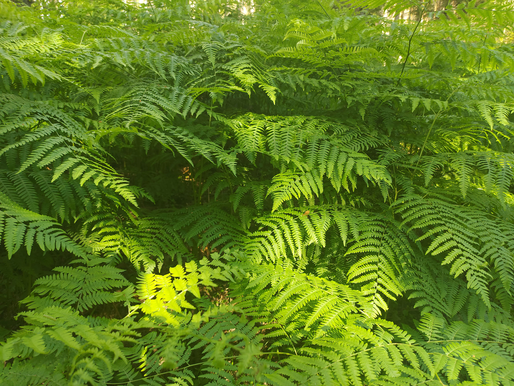

OBRÓBKA GRAFICZNA ZDJĘĆ
W obszarze obróbki graficznej zdecydowanie najwięcej uwagi poświęcam retuszowaniu fotografii. Z chęcią testuję różnorodne efekty i dążę do fachowej korekty kolorów, optymalnej redukcji szumów, rozsądnego wygładzania i wyostrzania elementów, starając się wydobyć ze zdjęcia to, co jest w nim najistotniejsze. Nie unikam wyzwań związanych z eliminacją prześwietleń, a tworzenie efektów teksturalnych przypominających ręcznie malowane obrazy rozpalaja moją kreatywność. Świetnie radzę sobie z usuwaniem niedoskonałości i niechcianych elementów z fotografii, zwłaszcza w sytuacjach, gdy w kadr wkradnie się niezaplanowany gość. W obrębie stylizacji tekstu, zazwyczaj wykorzystuję gradienty, obramowania, cienie oraz efekty płaskorzeźby, aby nadać elementom głębi i dynamizmu. Dodatkowo, eksperymentuję z kompozycjami, łącząc wycięte elementy z nowym tłem. Zawsze dążę do osiągnięcia perfekcji w tym co robię i pragnę rozbudować moje umiejętności odkrywając nieznane mi jeszcze techniki.


Retusz zdjęcia Ratusza w Mönchengladbach z usunięciem
niechcianych obiektów.

Prześwietlone zdjęcie drogi leśnej przed i po retuszu.


Retusz zdjęcia szklanej cukiernicy.
Zdjęcie róży przed i po retuszu oraz jej neonowa wersja.


Retusz zdjęcia paproci.
Prostowanie zdjęcia Kościoła św. Józefa w Prudniku-Lesie.

Retusz zdjęcia ściółki z pierwszymi oznakami zbliżającej się
jesieni.
.jpg)
Zdjęcie chmur kłębiastych nad polem przed retuszem.
Zdjęcie chmur kłębiastych nad polem po retuszu i kadrowaniu.


Oblaczek granatek przed i po nałożenieniu efektu szarości.


Wrośniak szorstki przed i po wyostrzeniu detali z
dopasowaniem balansu kolorów.


Kadrowanie zdjęcia kościoła katolickiego w Münster.


Zdjęcie słoneczników przed i po kadrowaniu, dodaniu tekstury
oraz korekcji koloru kwiatów.
Zdjęcie przed i po obróbce graficznej z wyostrzeniem pająka.
Wycięcie obiektu oraz dostosowanie go do nowego tła.
EDYCJA MANG


Arata Kangatari - przykładowa strona przed oraz po czyszczeniu i naniesieniu polskiego tłumaczenia.


Arata Kangatari - strona łączona przed oraz po łączeniu, czyszczeniu i naniesieniu polskiego tłumaczenia.


Arata Kangatari - przykładowa strona przed oraz po czyszczeniu i naniesieniu polskiego tłumaczenia.


Przykładowa strona Akumetsu przed oraz po czyszczeniu i naniesieniu polskiego tłumaczenia.


Przykładowa strona Akumetsu przed oraz po czyszczeniu i naniesieniu polskiego tłumaczenia.


Akumetsu - przed łączeniem, czyszczeniem i nanoszeniem polskiego tłumaczenia.

Akumetsu - po połączeniu, czyszczeniu i nanoszeniu polskiego tłumaczenia.
Masz pytania?
Napisz do mnie!
Kontakt:
Joanna Grygiel